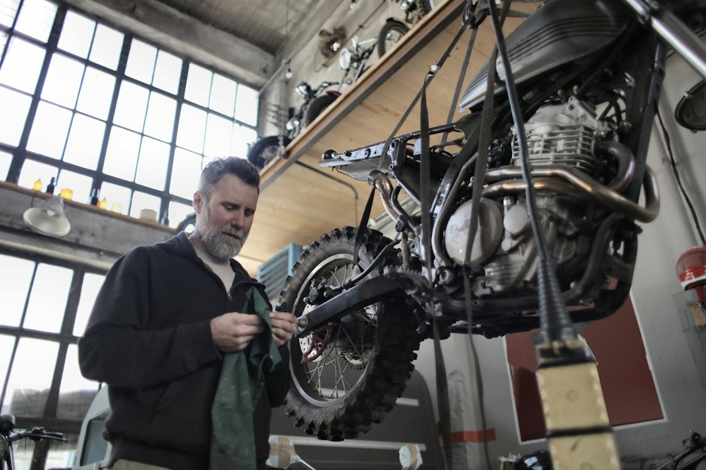

Our Team
|  | ||
| Jordan Thompson | Mario Rivera | Sam Laurence |
| Jordan Thompson has 25 years of experience in the auto repair industry. He is an ASE Master Technician and Certified Hybrid and Electric Vehicle Specialist. Jordan's journey began at 15, working in his uncle's garage. Over the years, he has developed a reputation for being able to fix anything with an engine. He has worked in various renowned auto repair shops and ran his own successful garage for a decade. Jordan is known for his deep knowledge of both classic and modern vehicles and loves taking on challenging restorations. | Mario Rivera has 20 years of experience in auto repair and maintenance. He is an ASE Certified Technician and holds an Automotive Service Consultant Certification. Mario's passion for cars started when he helped his father rebuild a vintage Mustang during his teenage years. He pursued formal training in automotive technology and quickly climbed the ranks in the industry. Mario has worked as a lead mechanic in multiple high-volume auto repair shops and is recognized for his exceptional customer service skills. He also mentors young mechanics and advocates for inclusivity in the auto repair field. | Sam Laurence has 18 years of experience in the auto repair industry. He is an ASE Master Technician and an Advanced Engine Performance Specialist. Sam's fascination with cars began in a high school robotics club, where he learned about mechanical systems. He pursued a degree in automotive engineering and has since worked in several top-tier auto repair shops, specializing in diagnostics and engine performance. Sam is known for his meticulous attention to detail and ability to troubleshoot complex automotive issues. He is also a frequent contributor to automotive magazines and blogs, sharing his expertise with the car enthusiast community. |
Our Story
Autorepair is a family-owned and operated auto repair shop! For over 50 years, we've been proud to serve our local community with top-notch automotive services and unwavering dedication. Our story began with Grandpa Joe, a passionate mechanic who opened the doors to Autorepair in 1975 with a simple mission: to provide honest, reliable, and friendly service to every customer.
Grandpa Joe's commitment to excellence and his genuine care for each client's needs quickly earned him a loyal following. As the years went by, he passed down his extensive knowledge and skills to his children and grandchildren, instilling in them the same values that built the foundation of our business. Today, the third generation of our family continues to uphold Grandpa Joe's legacy, ensuring that every customer receives the personalized attention and high-quality service they deserve.
Our team of skilled technicians takes pride in being a trusted part of the community, offering a wide range of services including steering and alignment adjustments, climate control repairs, preventative maintenance, transmission and engine repairs, vehicle inspections, and electrical diagnosis and repairs. We understand the importance of keeping your vehicle in peak condition, and we're here to help you every step of the way.
At Autorepair, we believe in treating our customers like family. We're committed to building long-lasting relationships based on trust, transparency, and exceptional service. Thank you for choosing us to care for your vehicle. We look forward to serving you and becoming your go-to auto repair experts for many more years to come.